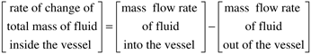
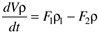
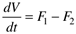
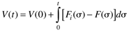
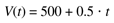
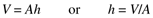
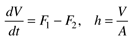
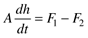
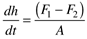

| [ Team LiB ] |
|
1.3 Process Models and Dynamic BehaviorThus far we have mentioned the term model a number of times, and you probably have a vague notion of what we mean by model. The following definition of a model is from the McGraw-Hill Dictionary of Scientific and Technical Terms:
In this textbook, model will be taken to mean mathematical model. More specifically, we develop process models. A working definition of process model is
Models play a very important role in control-system design. Models can be used to simulate expected process behavior with a proposed control system. Also, models are often "embedded" in the controller itself; in effect the controller can use a process model to anticipate the effect of a control action. We can see from Example 1.1 that we at least need to know whether an increase in the flow rate will increase or decrease the tank level. For example, an increase in the inlet flow rate increases the tank level (positive gain), while an increase in the outlet flow rate leads to a decrease in the tank level (negative gain). In order to design a controller, then, we need to know whether an increase in the manipulated input increases or decreases the process output variable; that is, we need to know whether the process gain is positive or negative. An example of a process model is shown next. A number of other examples are developed in Chapter 2. Example 1.3: Liquid Surge Vessel ModelIn the development of a dynamic model, simplifying assumptions are often made. Also, the model requirements are a function of the end-use of the model. In this case, we are ultimately interested in designing a controller and in simulating control-system behavior. Since we have not covered control algorithms in depth, our objective here is to develop a model that relates the inputs (manipulated and disturbance) to measured outputs that we wish to regulate. For this process, we first assume that the density is constant. The model we develop should allow us to determine how the volume of liquid in the vessel varies as a function of the inlet and outlet flow rates. We will list the state variables, parameters, and the input and output variables. We must also specify the required information to solve this problem (see Figure 1-2). The system is the liquid in the tank and the liquid surface is the top boundary of the system. The following notation is used in the modeling equations:
Here we write the balance equations based on an instantaneous rate-of-change,  where the total mass of fluid in the vessel is Vr, the rate of change is dVr/dt, and the density of the outlet stream is equal to the density of the vessel contents  Notice the implicit assumption that the density of fluid in the vessel does not depend on position (the perfect mixing assumption). This assumption allows an ordinary differential equation (ODE) formulation. We refer to any system that can be modeled by ODEs as lumped parameter systems. Also notice that the outlet stream density was assumed to be equal to the density of fluid in the tank. Assuming that the density of the inlet stream and fluid in the vessel are equal, this equation is then reduced to[1]
 In Equation (1.3) we refer to V as a state variable, and F1 and F2 as input variables (even though F2 is an outlet stream flow rate). If density remained in the equation, we would refer to it as a parameter. In order to solve this problem we must specify the inputs F1(t) and F2(t) and the initial condition V(0). Direct integration of Equation (1.3) yields  If, for example, the initial volume is 500 liters, the inlet flow rate is 5 liters/second and the outlet flow rate is 4.5 liters/second, we find  Example 1.3 provides an introduction to the notion of states, inputs, and parameters. Consider now the notion of an output. We may consider fluid volume to be a desired output that we wish to control, for example. In that case, volume would not only be a state, it would also be considered an output. On the other hand, we may be concerned about fluid height, rather than volume. Volume and height are related through the constant cross-sectional area, A  Then we have the following modeling equations,  where V is a state, F1 and F2 are inputs, h is an output, and A is a parameter. We could also rewrite the state variable equation to find  or  where fluid height is now the state variable. It should also be noted that inputs can be classified as either manipulated inputs (that we may regulate with a control valve, for example) or disturbance inputs. If we desired to measure fluid height and manipulate the flow rate of stream 1, for example, then F1 would be a manipulated input, while F2 would be a disturbance input. We have found that a single process can have different modeling equations and variables, depending on assumptions and the objectives used when developing the model. The liquid level process is an example of an integrating process. If the process is initially at steady state, the inlet and outlet flow rates are equal (see Equation 1.3 or 1.7). If the inlet flow rate is suddenly increased while the outlet flow rate remains constant, the liquid level (volume) will increase until the vessel overflows. Similarly, if the outlet flow rate is increased while the inlet flow rate remains constant, the tank level will decrease until the vessel is empty. In this textbook we first develop process models based on fundamental or first-principles analysis, that is, models that are based on known physical-chemical relationships, such as material and energy balances, as well as reaction kinetics, transport phenomena, and thermodynamic relationships. We then develop empirical models. An empirical model is usually developed based on applying input changes to a process and observing the response of measured outputs. Model parameters are adjusted so that the model outputs match the observed process outputs. This technique is particularly useful for developing models that can be used for controller design. |
| [ Team LiB ] |
|